Destiny 2: Forsaken is a major expansion for Destiny 2, a first-person shooter video game by Bungie. Released on September 4, 2018, as the third expansion of Destiny 2, it revolves around the player's Guardian seeking to avenge the death of Cayde-6 by the hands of Prince Uldren Sov. Uldren, corrupted by the Darkness, is in search of his lost sister, Queen Mara Sov, both of whom were thought to have died in Destiny: The Taken King. Along their journey, players face the Scorn, undead versions of the Fallen race that have been revived and morphed into a new race. Forsaken adds content across the game, including new missions, Player versus Environment locations, Player versus Player maps, player gear, weaponry, and a new raid. Upon the expansion's release, retailers also issued Destiny 2: Forsaken Legendary Collection, which includes the Destiny 2 main game, Forsaken, and the previous two expansions, Curse of Osiris and Warmind.
Overview
Destiny 2: Forsaken introduces several major updates to the core Destiny formula, improving upon the existing weapon, loot, and upgrade systems. The random roll weapon system from the first Destiny will be introduced alongside all Year 2 weapons. New weapons will have a variety of perks randomly assigned when you obtain them. Additionally, all Year 1 weapons will be retired from Destiny 2 and will no longer be obtainable after the launch of Forsaken (though existing copies can be infused to Year 2 Power Levels).
The weapon slot system has been opened up so that many weapon types can be equipped in various weapon slots. With this change, weapons are now assigned an ammo type instead, similarly to the ammo types used for various weapon types in Destiny. Along with this, Weapon Mods now include various weapon perks that can be attached to weapons instead of simple power increases or elemental changes.
The Masterwork system has been greatly expanded. Masterworks have evolved from one single upgrade to ten distinct upgrade tiers. Specific Masterwork tiers grant unique bonuses as well, such as kill tracking at Tier 7 and a masterwork emblem at max level, Tier 10.
Plot
Following years of turmoil, The Reef has begun to degrade into lawlessness. Cayde-6 and the Guardian are sent to investigate the area and help alleviate the area's major stresses. Upon landing at The Reef, a massive prison break occurs at the Prison of Elders, freeing some of the most wanted and dangerous criminals back into the galaxy. Beyond the Vanguard’s authority, the player will pursue these fugitives deep into the Reef. The most powerful of the fugitives, known as the Scorn, are responsible for leading the breakout. Petra Venj and the Guardian, fueled by revenge, look to hunt the 8 Barons of the Scorn, eventually culminating in the discovery of the Awoken homeworld known as the Dreaming City.
The Dreaming City is a location featured in Destiny 2: Forsaken. It is an endgame patrol area that becomes accessible after completing the Forsaken campaign. The location will include new public events, activities, questlines, and the Last Wish raid at the city's core. An activity named Blind Well will be a major feature of the area. Groups of three to six Guardians can pledge offerings to a monument that summons creatures to defeat. By defeating enemies, Guardians will unlock new areas and eventually fight bosses at the end of the activity.
New Subclasses
Each of the three character classes feature three new supers for each of their subclasses, which are tied to a brand new third subclass branch.
For Hunters, the new super for Gunslingers is "Blade Barrage", focusing on throwing a volley of flaming knives; "Spectral Blades" for Nightstalkers, allowing players to turn invisible and see through walls and attack with Void daggers; and "Whirlwind Guard" for Arcstriders, which allows players to block and reflect projectiles by spinning their Arc Staff.
For Warlocks, the new super for Voidwalkers is "Nova Warp", allowing players to teleport around the battlefield and unleash a Void explosion; "Chaos Reach" for Stormcallers, which unleashes a beam of Arc energy that can be turned off at anytime to conserve Super energy; and "Well of Radiance" for Dawnblades, allowing players to create a healing and empowering aura for players to stand in.
Finally, for Titans, the new super for Strikers is "Thundercrash", allowing players to launch into the air and slam onto the ground; "Burning Maul" for Sunbreakers, which players wield a large flaming hammer that can unleash flaming tornadoes; and "Banner Shield" for Sentinels, allowing players to use their Sentinel Shield to unleash a protective barrier that players can also shoot their weapons through.
Each new subclass branch, along with their new supers, can be unlocked by obtaining an item called a "Seed of Light", in which three are available for each character; the first Seed of Light is obtainable through playing the campaign of Forsaken, while the other two can be obtained by playing through high-level, endgame activities.
Gambit
Gambit is a multiplayer game type introduced in Destiny 2: Forsaken. This mode is a hybrid PVP/PVE mode that features two teams of four as they compete across three rounds. Gambit is overseen by The Drifter, who provides commentary and organizes matches. Before each round, The Drifter flips a coin to determine which enemies will spawn for that round. Fallen, Scorn, Hive, Vex, and Cabal can be used in various rounds. When killed, enemies drop motes that are cashed into the team's central bank. Majors can occasionally spawn and will drop more motes when killed.
Teams are separated into different areas and must kill waves of enemies to collect motes and deposit them in a central bank to accrue points. During the match, teams can summon blocker enemies, as well as teammates, to the other team's arena. When a team turns in 5 motes, they spawn a small blocker enemy for the enemy team. When 10 motes are turned in, a medium block enemy is sent to the enemy team. When 15 motes are turned in a large blocker enemy is sent to the enemy team. When a team deposits 25 motes, they can send one team member over to the other team's arena. The invading player takes on the form of a red specter and is buffed with increased stats. Once a team reaches 75 motes, they can summon a Primeval boss that must be killed to win the round. Teams can still invade each other while in the Primeval fight. If a team member dies during this fight, the Primeval heals damage.
 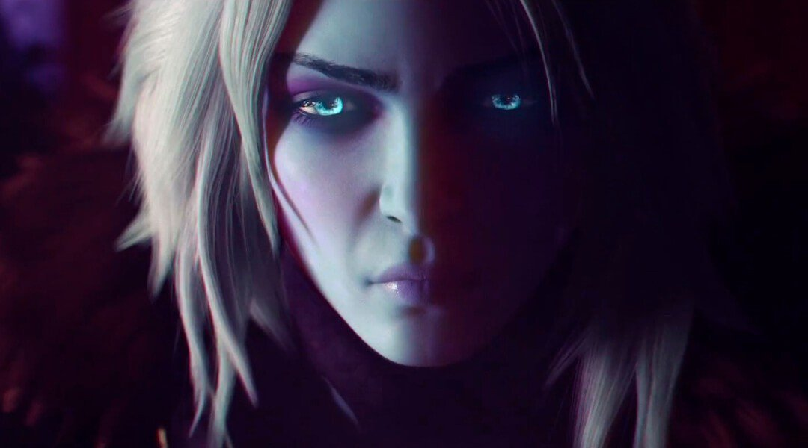
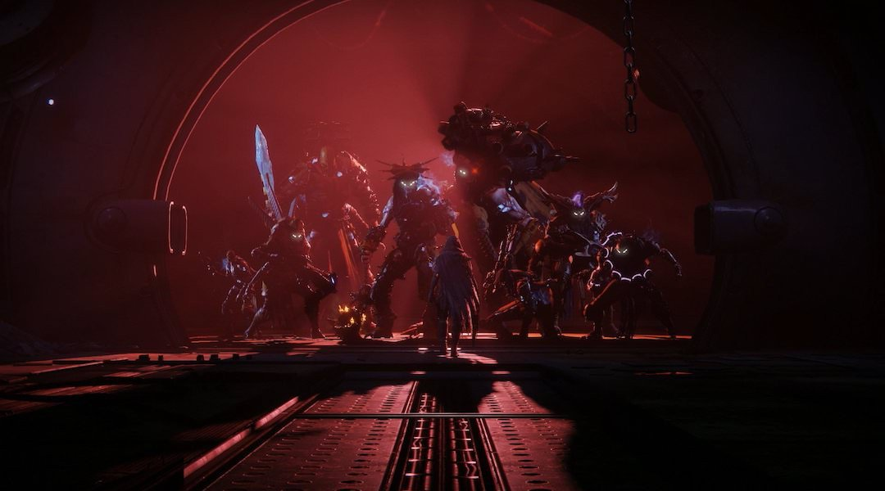
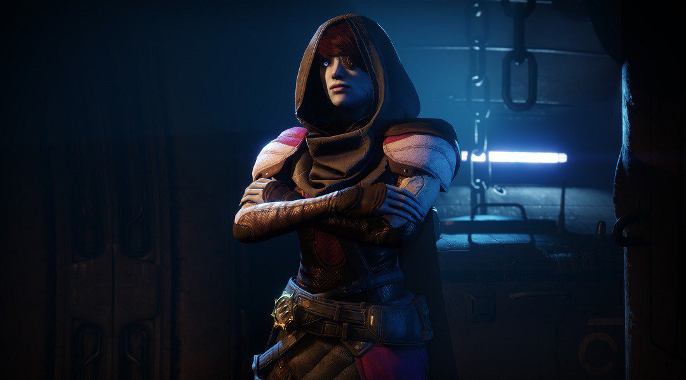
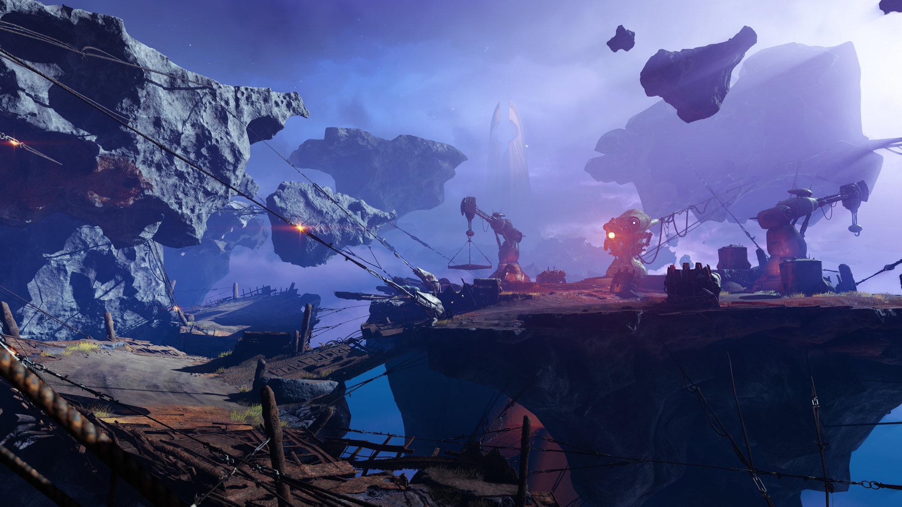
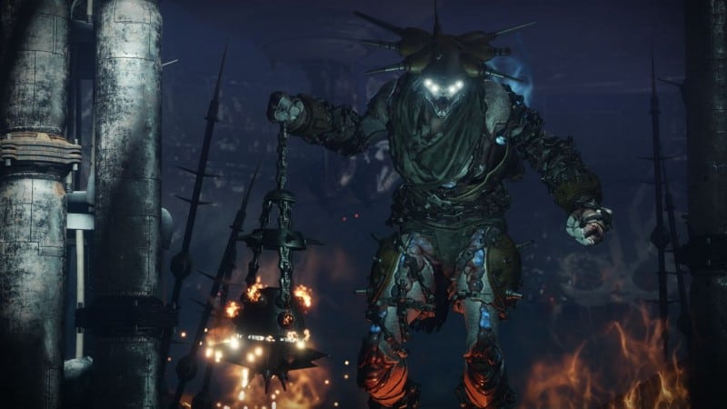
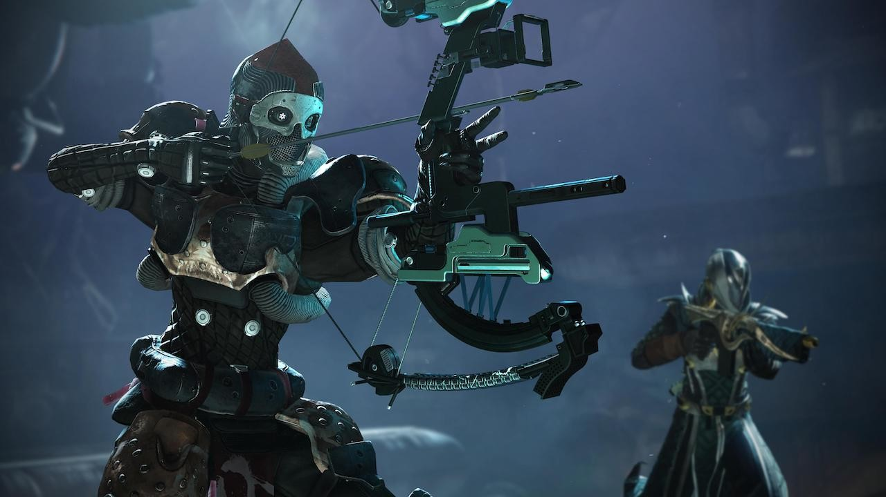
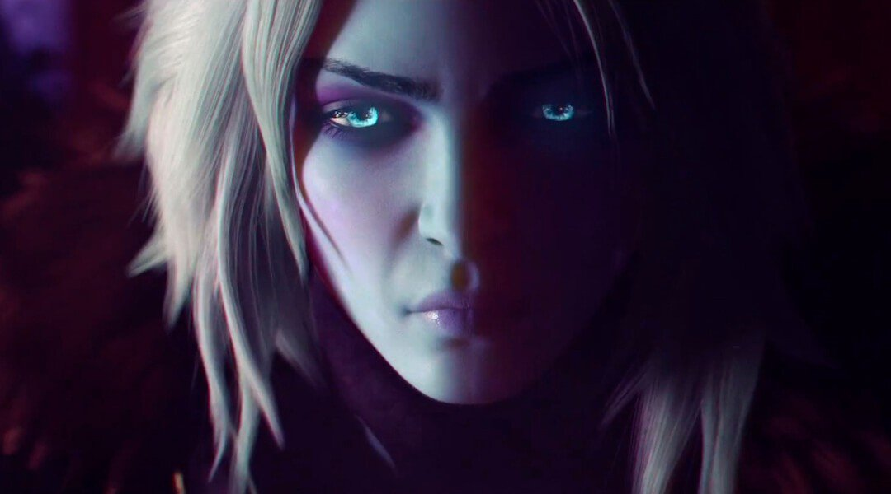
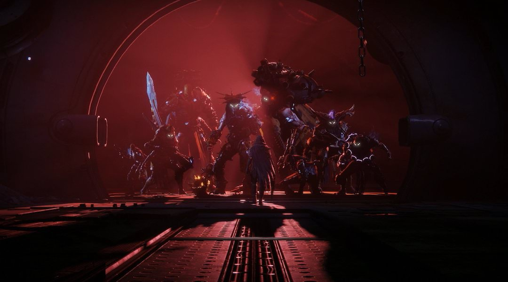
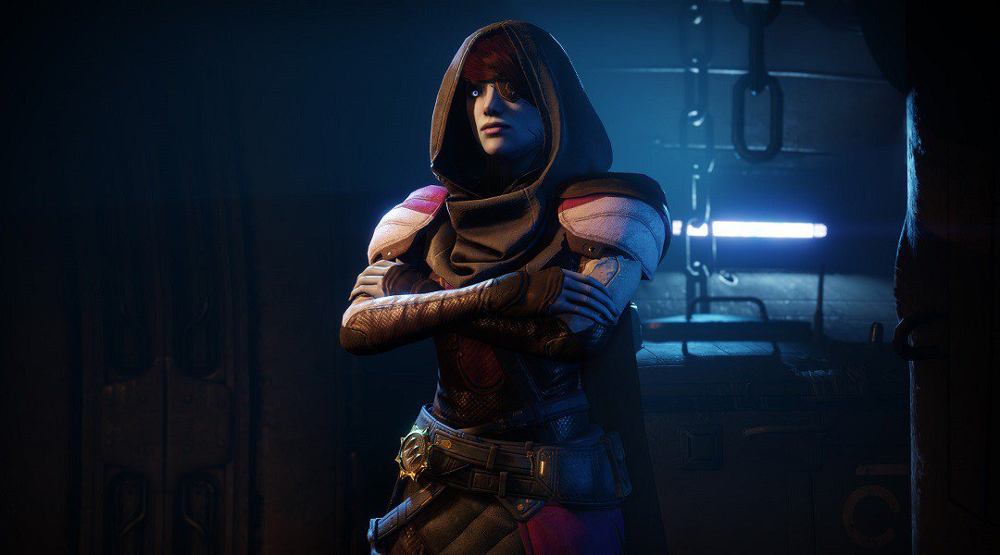
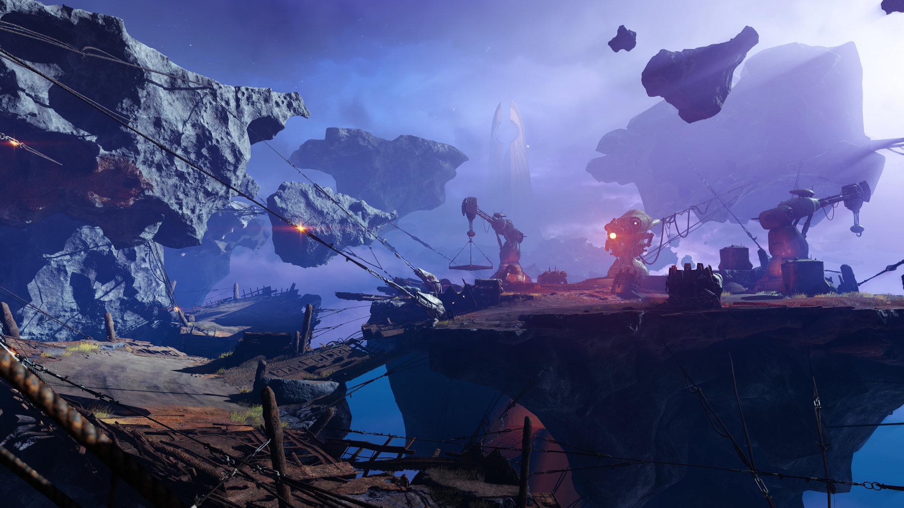
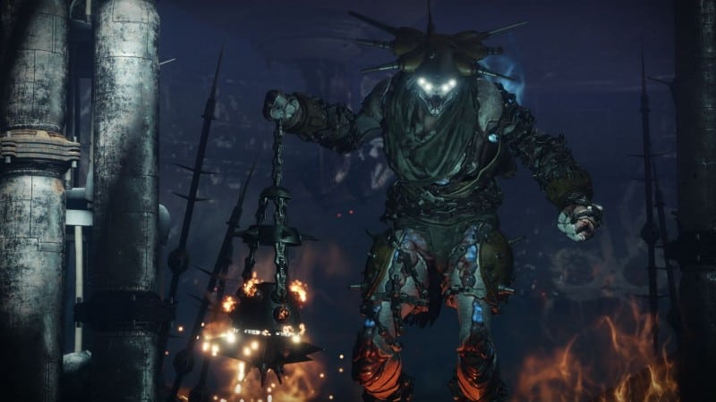
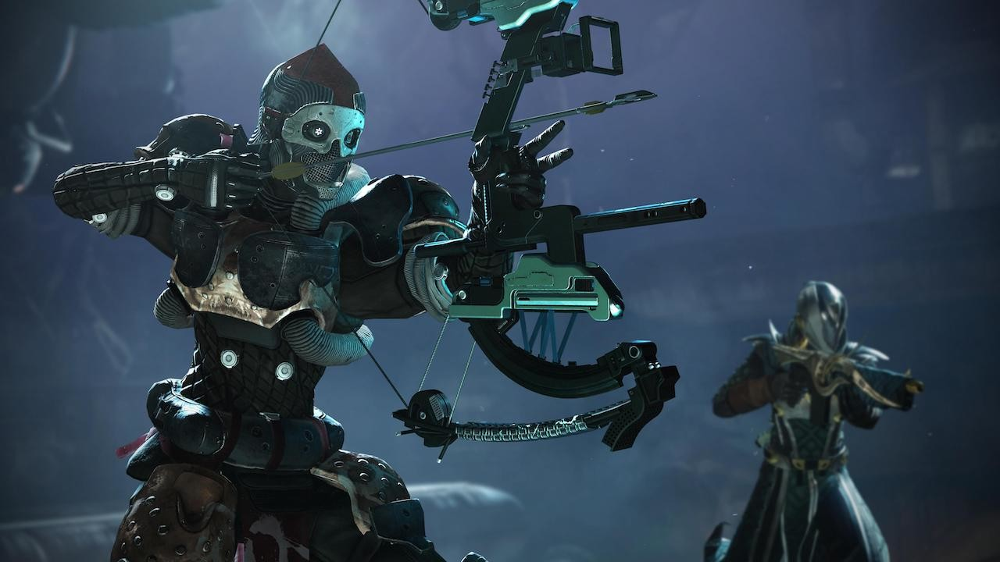